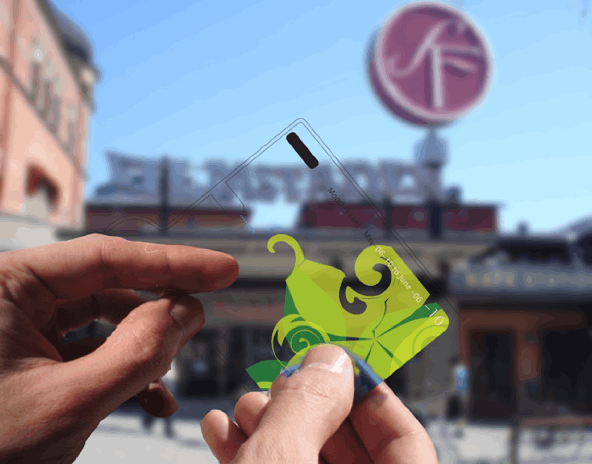
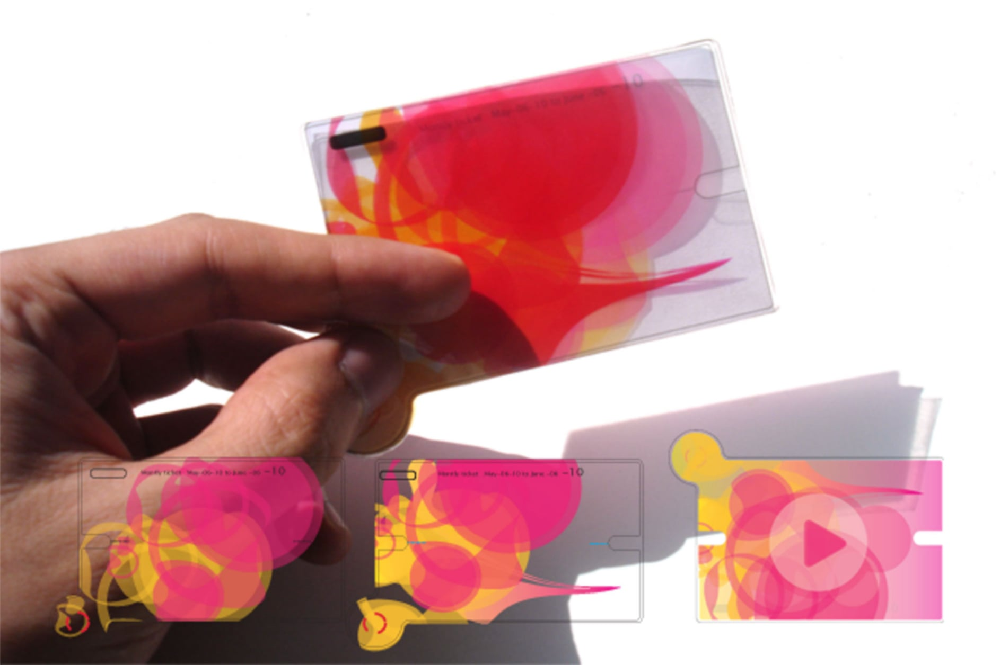
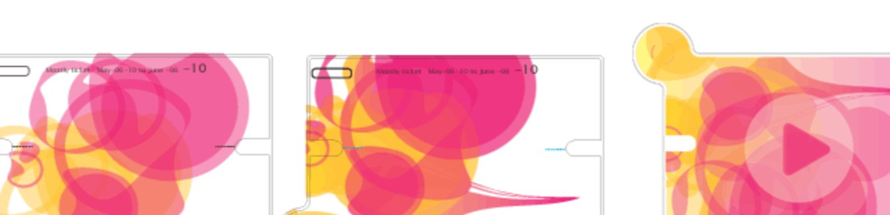
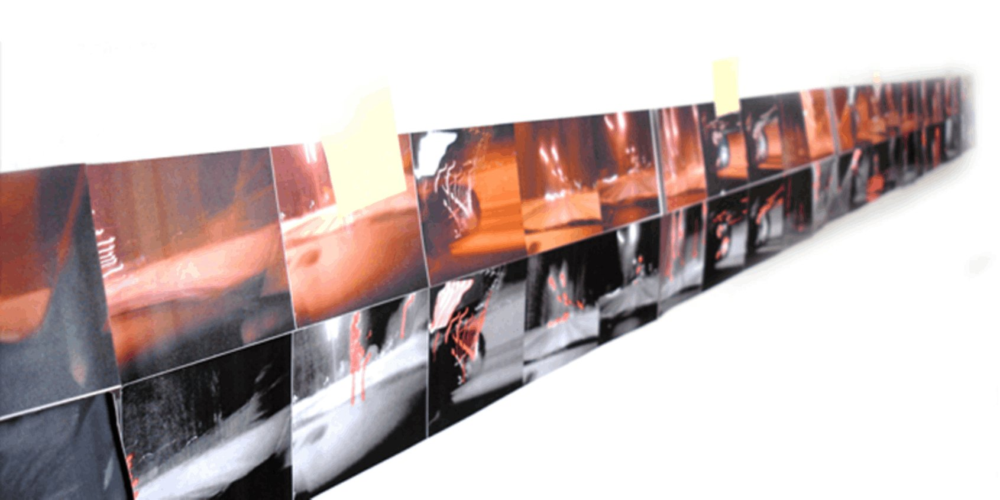
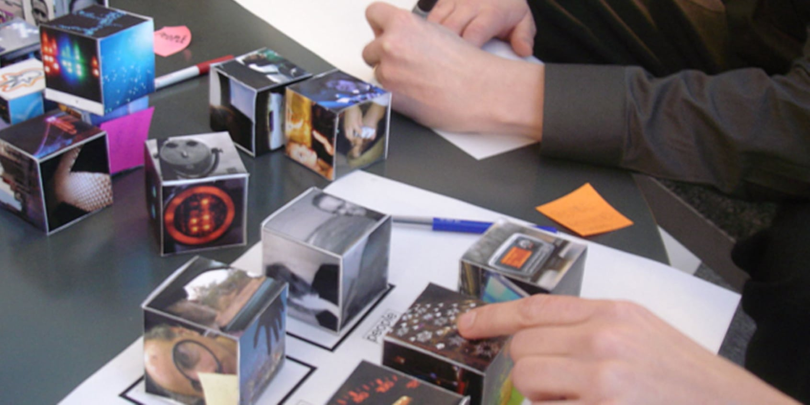
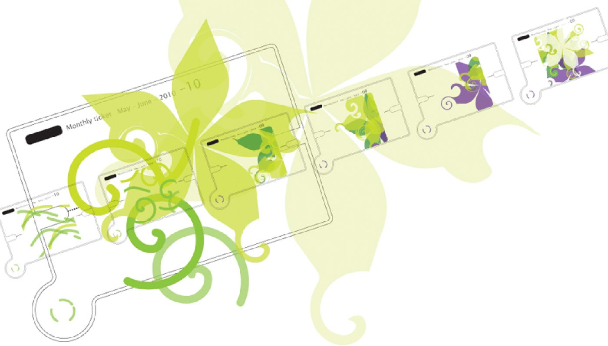
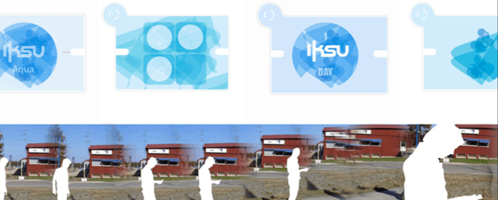
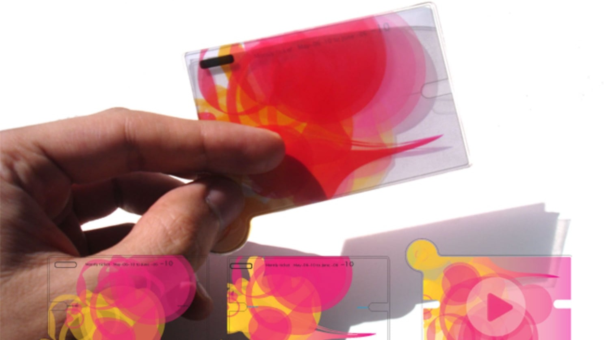

In 2006 — years before the App Store, before NFC payments, before location-aware advertising — I designed a system that used the city itself as a commerce platform. Glowing Citizens reimagined the humble transit pass as an intelligent, disposable digital device: a transparent card that responded to the urban environment around it.
As you moved through the city, the pass became a window onto it — surfacing contextual promotions, local gems, and community offers from the gyms, cafés, dance studios, and libraries you passed. No apps to open, no screens to unlock. Just your city, quietly glowing with relevance.
This was my MFA graduation project at Umeå Institute of Design — a speculative design vision grounded in rigorous field research and participatory co-design methods.
Glowing Citizens proposed a lightweight, disposable digital pass — a daily or monthly transit ticket redesigned as an interactive portal into city life. As commuters moved through the urban landscape, the pass responded to their location, surfacing contextual offers and promotions from nearby places — without ever requiring them to stop, tap, or search.
The physical form factor everyone already carries — a daily or monthly bus/tram ticket — redesigned as a connected device.
Buildings, shops, civic spaces broadcast their offers and identity. The pass receives and filters them — turning the streetscape into a relevant, personal feed.
A dance studio shares its new Salsa class — with a music clip. A café offers a free coffee. A gym promotes a day pass. All contextual, all ambient, all frictionless.
The physical design of the pass was central to the concept. Transparent, thin, and beautiful — it was designed to feel like holding a piece of the city itself. The generative visual patterns on each pass reflected the character and energy of different venues and promotions.

The transparent pass held against the city — literally a window onto urban life. Location-aware promotions from nearby venues appeared on the pass display as you moved through the street.

The pass visual language — generative, fluid, and identity-coded. Each venue or promotion produced its own unique visual pattern, making the pass a canvas as much as a functional device.

Three pass interaction states — browsing nearby offers, reading a promotion in detail, and playing a media preview (a salsa music clip from a dance studio). All navigable on the pass itself.
Before designing anything, I needed to understand how people perceive and notice things while moving through the city. I used two complementary research methods — Urban Probes and Participatory Design — to build a foundation of real insight.

Urban Probes output — participants' commute photographs assembled into a continuous timeline. The sequence reveals what captures attention in transit: signage, light, faces, the blur of passing architecture.

Idea Cubes workshop — participants rolled dice covered in imagery to generate user scenarios collaboratively. The game format lowered barriers and produced unexpectedly rich use cases.

Motion research — exploring how the city appears differently at walking pace vs. transit speed. Key insight: ambient, peripheral information is more accessible in motion than detailed text.
A key design principle was that Glowing Citizens should be ambient, not interruptive. The pass didn't buzz, ping, or demand attention. Instead, it glowed softly when something nearby was relevant — inviting a glance rather than demanding a tap.
Promotions were tailored to place type: gyms and sports centers, cafés, libraries, dance studios, educational centres. A dance studio's salsa class promotion included a music clip — so as you walked past, you could actually hear the rhythm before deciding whether to engage.
The interaction model was deliberately simple and sequential: proximity triggers a glow, a glance reveals the offer, a tap plays a preview, a second tap saves or redeems. No account creation, no app switching, no friction.
The pass was also designed to expire — daily or monthly, like a transit ticket. This disposability was a feature, not a limitation: it kept the system lightweight, privacy-preserving, and anchored to the physical rhythm of city life.
The scenario that anchored the project: Juan is commuting to work. As his tram passes a café, his pass glows. He glances down — a free coffee promotion, valid for 20 minutes. He taps. At the next stop, he redeems it. He didn't search, didn't browse, didn't even take his phone out. The city offered something useful. He said yes.

IKSU Aqua — a sports and wellness centre in Umeå. As a commuter walks past, the pass surfaces an IKSU Day Pass offer. The sequence shows the pass progressing through offer states as proximity increases.
Each pass was designed with a generative visual identity tied to its validity period and usage context. The patterns were fluid, organic, and beautiful — making the pass an object people would want to hold and look at, not just tap and pocket.

The physical pass and its digital states — generative ink-like patterns identify the pass period and personality. UI states below show the progression from ambient glow to full offer detail.
Designed in 2006 — a year before the iPhone — Glowing Citizens anticipated location-aware commerce, NFC interaction, and ambient computing by nearly a decade.
Selected as a graduation project at Umeå Institute of Design — one of Europe's leading interaction design programmes — demonstrating research rigour and design vision.
Established a conceptual framework — the city as a dynamic commerce and civic interface — that anticipated smart city thinking still being explored today.
"An interactive travel pass — a window to see through the buildings." The city isn't a backdrop to daily life. It's the interface itself.Glowing Citizens — MFA Thesis, Umeå Institute of Design, 2006
Glowing Citizens taught me that the most powerful interactions are the ones that ask the least of you. Ambient, contextual, peripheral — the pass was designed to exist at the edge of attention, not the centre of it. That's a profoundly different design challenge than building an app people actively choose to open.
It also taught me the power of research methods as design tools. Urban Probes didn't just inform the design — they revealed a way of seeing the city that I couldn't have found through interviews or surveys alone. The photographs participants took told stories about attention, habit, and desire that changed everything I thought I knew about the problem.
And finally: speculative design is still design. Even without a client or a launch date, the rigour of research, iteration, and scenario validation produces work that is credible, provocative, and lasting.